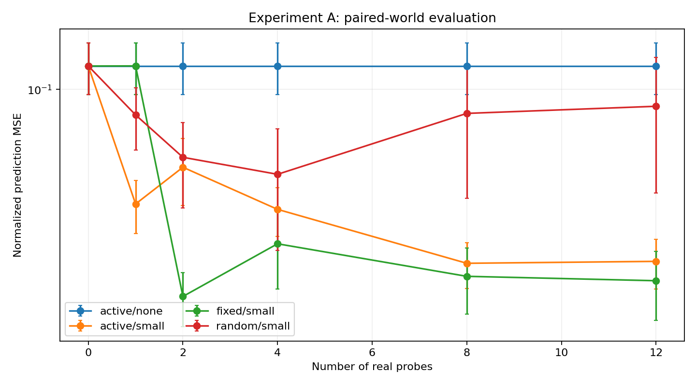

MuJoCo 数值感知 · 主动探索 · 快速局部记忆
最终预算下，随机减主动的配对 NMSE 差：0.063941。正值表示本次主动策略更好，负值表示更差。
误差条为一个随机种子内世界间的标准误，不能替代多种子统计。容量扩展不是发现物理概念的证明。

| 策略 / 记忆 | 真实试探次数 | 平均 NMSE | 世界间标准误 |
|---|---|---|---|
| random/small | 0 | 0.122532 | 0.027128 |
| random/small | 1 | 0.080011 | 0.021173 |
| random/small | 2 | 0.055299 | 0.019684 |
| random/small | 4 | 0.047680 | 0.023098 |
| random/small | 8 | 0.081081 | 0.042336 |
| random/small | 12 | 0.086267 | 0.045825 |
| fixed/small | 0 | 0.122532 | 0.027128 |
| fixed/small | 1 | 0.122642 | 0.027095 |
| fixed/small | 2 | 0.016442 | 0.003822 |
| fixed/small | 4 | 0.026024 | 0.008468 |
| fixed/small | 8 | 0.019597 | 0.005491 |
| fixed/small | 12 | 0.018859 | 0.005492 |
| active/small | 0 | 0.122532 | 0.027128 |
| active/small | 1 | 0.036818 | 0.008413 |
| active/small | 2 | 0.050707 | 0.014355 |
| active/small | 4 | 0.035131 | 0.007333 |
| active/small | 8 | 0.021956 | 0.004342 |
| active/small | 12 | 0.022326 | 0.004783 |
| active/none | 0 | 0.122532 | 0.027128 |
| active/none | 1 | 0.122532 | 0.027128 |
| active/none | 2 | 0.122532 | 0.027128 |
| active/none | 4 | 0.122532 | 0.027128 |
| active/none | 8 | 0.122532 | 0.027128 |
| active/none | 12 | 0.122532 | 0.027128 |
metrics.csv：逐世界指标；interactions.jsonl：真实交互；growth_events.json：扩展决策；manifest.json：版本和哈希。